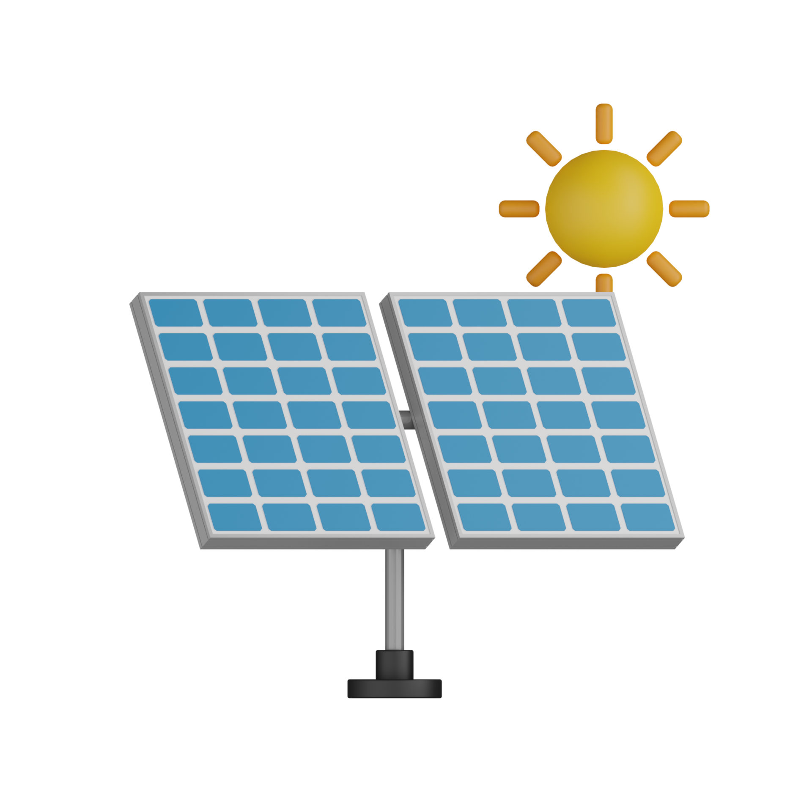

Dettagli stanza
Metratura stanza (m^2):
Condizionatore:
Classe energetica A
Classe energetica B
Classe energetica C
Aggiungi condizionatore
Rimuovi Condizionatore
Temperatura di partenza:
Usa pannelli fotovoltaici:

Numero di pannelli necessari:
Calcola tempo necessario e consumi
È consigliato non usare il condizionatore quando la temperatura è tra 20 e 25 gradi.